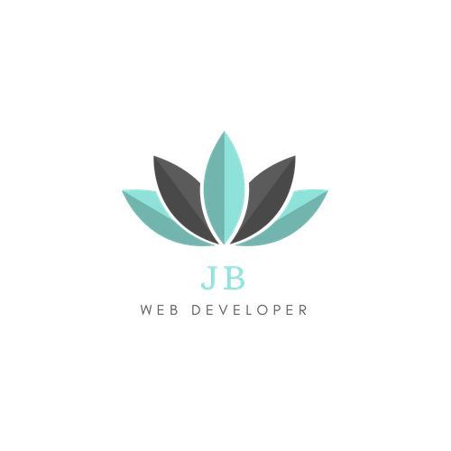
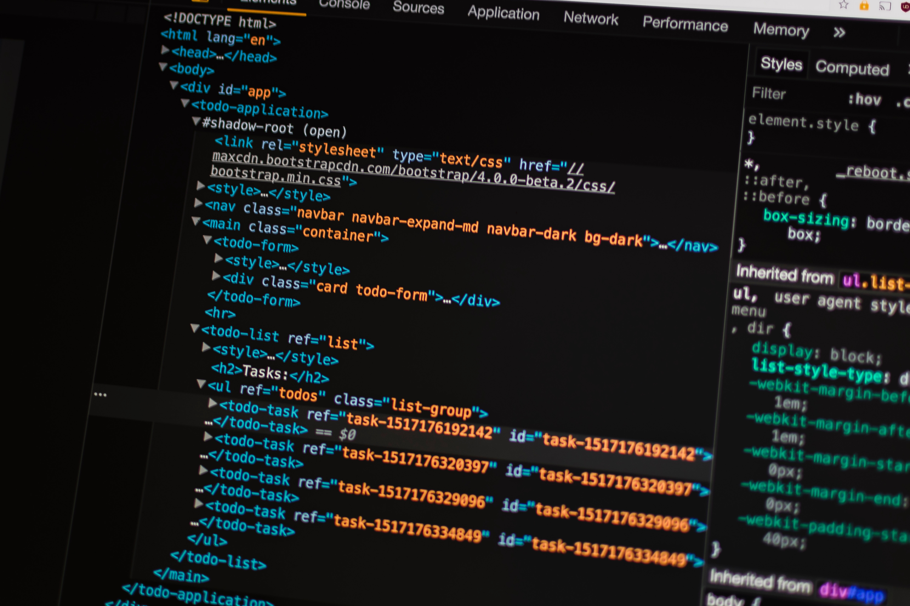
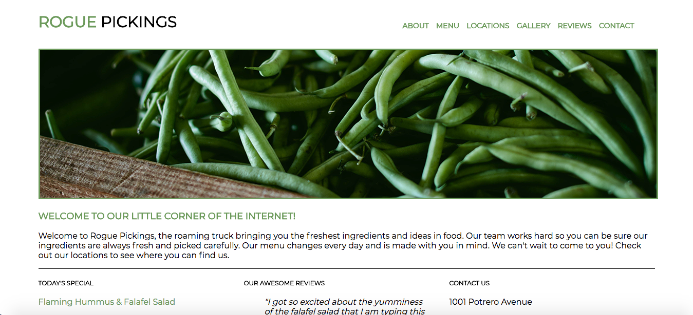
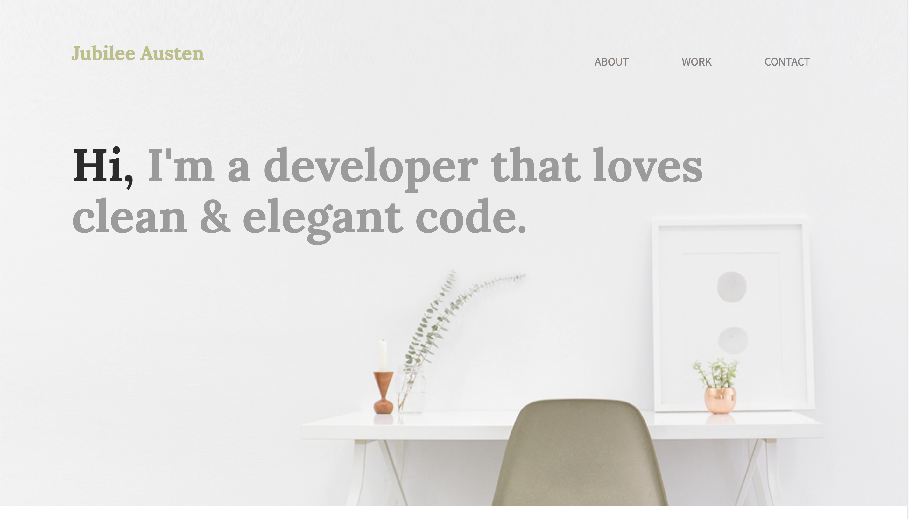

Jacquetta Bommuluri
Portfolio

Featured Projects



A little bit about me:
Hello there and Welcome to my portfolio site. My name is Jacquetta Bommuluri and I am a Front-End Web Developer and sometime designer also known as a unicorn. I am a mother of a great preschooler who constantly keeps me on my toes and is my motivation. I started to learn how to code late 2016. I recently was accepted for the Grow with Google Scholarship for the Front-End Web Development Nanodegree course at Udacity which I will finish by October. A fun fact about me is that I love zombie movies my favorite is the 1978 Dawn of the Dead by George A. Romero.